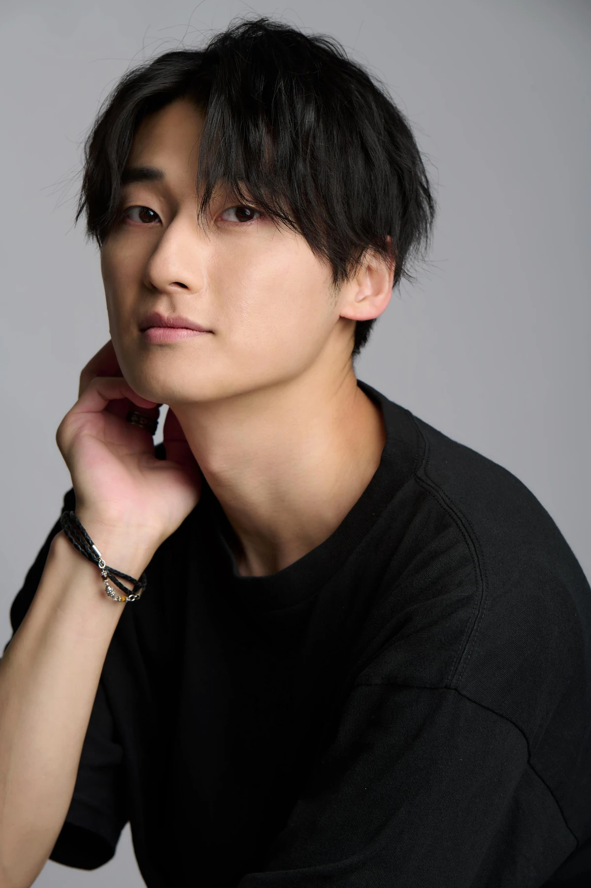

Nome: Kuresawa Tasuku

Descrição:
Kurosawa Tasuku é um colega de escola conhecido por sua personalidade tranquila e amigável. Embora não esteja sempre no centro das atenções, ele desempenha um papel importante no ambiente social dos personagens, oferecendo apoio e compreensão aos amigos. Sua presença contribui para o clima acolhedor e leve da história.
Dublado por:
Jap: Ryohei Arai
Nacionalidade:JaponêsData de nascimento: 1 de setembroLocal de nascimento: Saitama,Japão Idade: ???Trabalhou tambem em:one pieceDays with My StepsisterSailor Moon Eternal
Br: Cadu RamosNacionalidade:BrasileiroData de nascimento: 8 de abril de 1993Local de nascimento: São José dos Campos,SPIdade: 33 AnosTrabalhou tambem em:That Time I Got Reincarnated as a SlimeSword Art Online: Alicization